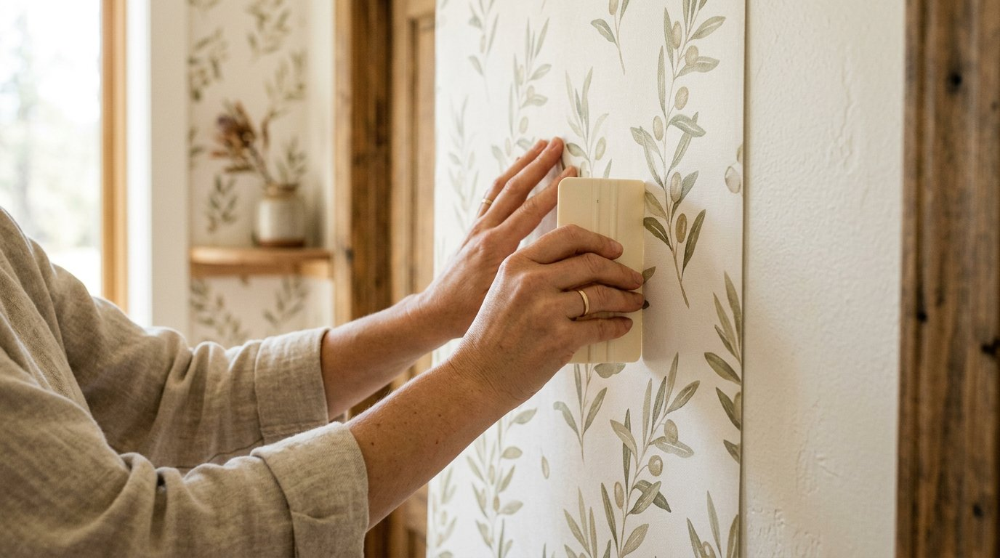
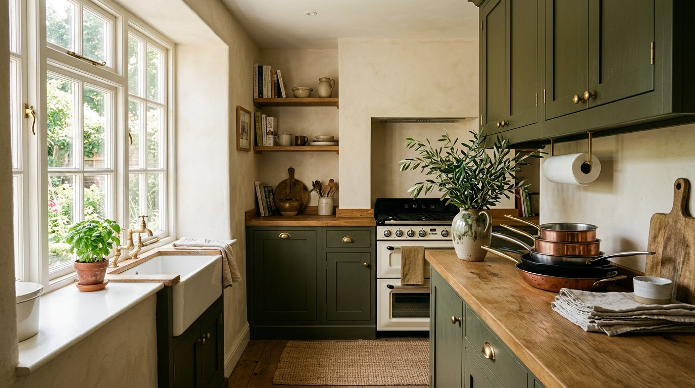

01 / WALLS & FINISHES
Wallpaper smoothing kit
A small toolkit to consider before tackling a peel-and-stick wall.
Explore upgrade ↗
Thoughtful finds for the places you use most.
Start with the walls, counters, and cabinets.

A small toolkit to consider before tackling a peel-and-stick wall.
Explore upgrade ↗
Move the paper towel roll off the worktop and keep it within reach.
Explore upgrade ↗
Give frequently used pans a spot you can reach without unstacking them.
Explore upgrade ↗Before buying another organizer, take out the pans you reach for every week. Fit the cabinet around those first.
Read the cabinet guide ↗